학부에선 자연 과학을 전공하고 식물 대사체 분석을 주제로 교내에서
포스터 발표 진행 후 졸업했습니다.
석사 기간 동안 한반도의 감꼭지나방과의 계통학적 연구를 수행했고
기존에 전통적으로 아뤄지는 형태학, 분자와 접목해
인공지능, Micro-CT, 시뮬레이션 등 다양한 방법들을 통해
해당 과에 속하는 종들의 다양성을 다각도에서 분석했습니다.
Hello, I'm In-Won Jeong. Nice to meet you!
Thank you for visiting my website.
I majored in Natural Sciences during my undergraduate studies
and graduated after presenting a campus poster on
plant metabolite analysis.
During my master's degree,
I conducted a phylogenetic study on the family Stathmopodidae from the Korean Peninsula.
By integrating traditional morphological and molecular approaches with
artificial intelligence, Micro-CT imaging, and simulation techniques,
I explored the diversity of species within this family from multiple perspectives.
Education
Ajou University
(Major: Biological Science; Minor: Chemistry & Biological Engineering),
Suwon, Republic of Korea
2017. March.~2023. February.
Army, Gangwon-do, Republic of Korea
2018. April.~2019. December.
Jeonbuk National University
(Department of Agricultural Convergence Technology),
Jeonju, Republic of Korea
2023. March.~2025. August.
This study presents a checklist of Lepidoptera, including previously unrecorded species, from Yeoseo Island,
a small island located at the southernmost point of Wando-gun, highlighting the island's biological and conservation value.
(Korean Journal of Applied Entomology, 2025.06.)
This study reports for the first time an unrecorded species of the genus Stathmopoda from the Korean Peninsula.
(Entomological Research Bulletin, 2024.10.)
This study reports for the first time a new species belonging to a previously unrecorded genus of Stathmopodidae from the Korean Peninsula.
Jeong, I. W., & Kim, S. (2024). A new species of Pachyrhabda Meyrick (Lepidoptera: Stathmopodidae) from the Korean Peninsula. Zootaxa, 5507(1), 179-186.
This study comprehensively addresses the morphological, ecological, and molecular aspects of kleptoparasitic bees.
Kim, S., Lim, K., Park, D. Y., Park, J., Jeong, I. W., & Lee, S. (2024). Insight on kleptoparasitic bee, Melecta chinensis (hymenoptera: Apidae), in the Republic of Korea: Morphology, biology and molecular characteristics. Entomological Research, 54(4), e12723.
Conference
Korean Society of Applied Entomology, 2025, Spring
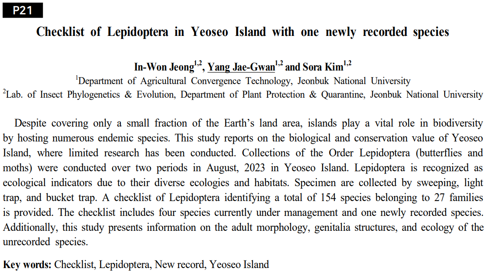
포스터터발표 초록입니다.
10년 가까이 동물상 연구가 진행되지 않았던 남한의 남쪽에 위치한
작은 섬인 여서도에 대한 나비목 목록을 보고한 내용입니다.
추가적으로, 미기록종 한 종을 발굴할 수 있었습니다.
발표를 진행한 양재관 학생에게 감사드립니다.
This section reports a Lepidoptera species list from Yeoseo Island,
a small isalnd located in the southern part of South Korea,
where faunistic research had not been conducted for nearly a decade.
Additionally, one previously unrecorded species was discovered.
Special thanks to student Jae-Gwan Yang for presenting this work.
Korean Society of Applied Entomology, 2025, Spring
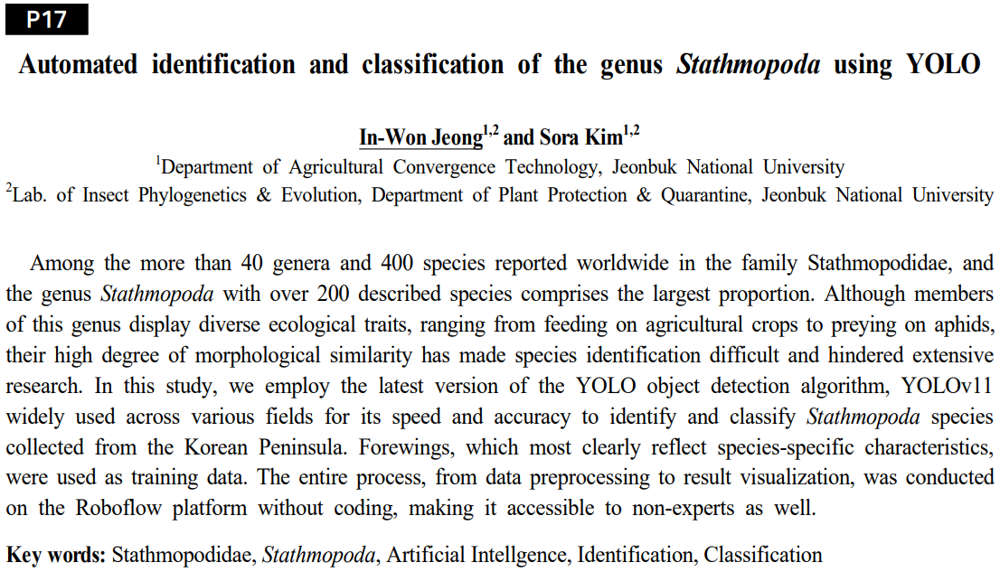
포스터터발표 초록입니다. Stathmopoda 속의 종들을 인공지능 알고리즘인 YOLO를 활용해
자동적으로 탐지하고 동정하는 내용입니다.
기존의 인공지능 종 동정은 다른 과 혹은 목을 섞은 뒤 동정 성능을 평가했는데
해당 연구에서는 같은 속의 종들의 앞날개 중심으로 인공지능이 미세한 차이를 인식하고
종을 정확히 구분할 수 있는지 확인하고자 했습니다.
This is an abstract for an poster presentation.
This study presents the automatic detection and identification of species
within the genus Stathmopoda using the Artificial Intelligence algorithm YOLO.
While previous AI-based species identification studies have typically assessed performance
using mixed samples from differenct families or orders, this research focused
specifically on subtle morphological differences within forewings of species
belonging the the same genus, aiming to verify whether AI could accurately recognize
and differentiate closely related species.
논문 작성 중인 내용이며, 학습 결과는 추후 QR 코드를 통해 제공해 누구나 쉽게 해당 결과를 활용할 수 있게 했습니다.
This manuscript is currently in preparations, and the detailed training results will later be made accessible
via a QR code, enabling easy utilization and application of the findings by anyone interested.
Korean Society of Applied Entomology, 2025, Spring
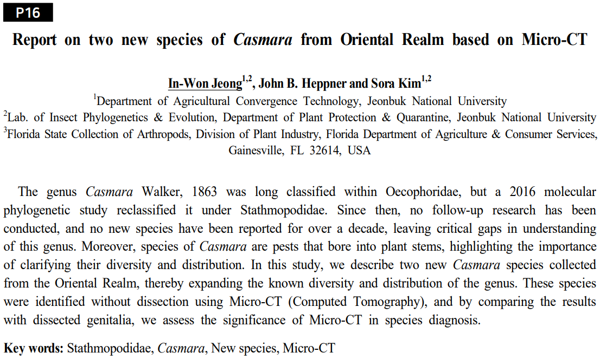
포스터터발표 초록입니다.
Micro-CT로 신종을 보고하는 내용입니다.
Micro-CT는 많이 다룬 내용이라 설명은 생략하겠습니다.
This section reports new species identified using Micro-CT.
Since Micro-CT has been extensively covered previously, its explanation will be omitted.
Korean Society of Applied Entomology, 2025, Spring
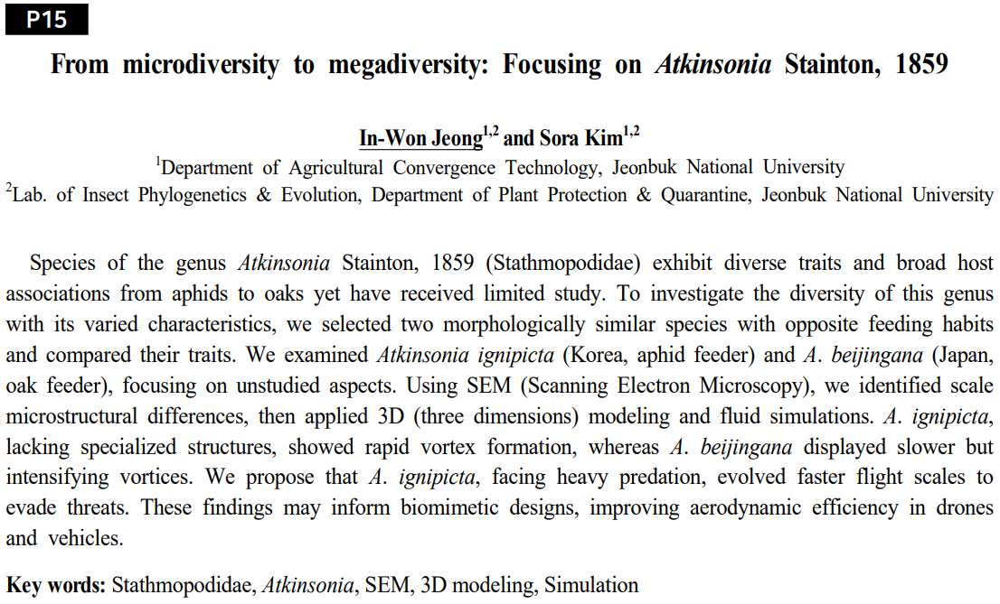
포스터발표 초록입니다.
연구가 극히 제한된 감꼭지나방과의 Atkinsonia 속에 속하는
종들 중에서 형태적으로 유사하지만 육식과 초식의 생태적 특징을 가진 두 종을
FE-SEM, 유체역학 분석을 통해 마이크로구조부터 기능적 차이까지 분석했습니다.
This is an abstract for an poster presentation.
Among species of the genus Atkinsonia within the family Stathmopodidae,
a group for which research is extremely limited,
we analyzed two morphologically similar species exhibiting carnivorous and herbivorous
ecological traits, respectively.
Using FE-SEM and fluid dynamics analyses, we examined their
microstructures and assessed their functinal differences.
Korean Society of Applied Entomology, 2025, Spring
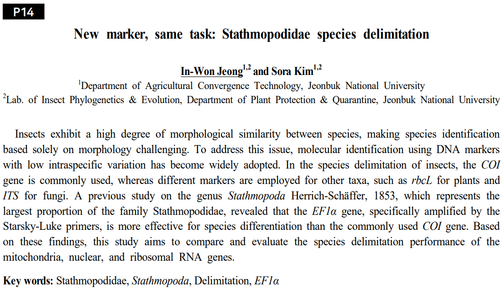
포스터터발표 초록입니다.
일반적으로 동물들에게서 COI 유전자가 종 구분에서 가장 많이 사용되었습니다.
하지만 해당 연구는 COI보다 EF1a 유전자가 Stathmopoda속에서 더 종의 특징을
잘 반영한다는 결과를 바탕으로 선행 연구에서 사용된 COI과 EF1a의 특정 유전자 영역과 더불어
RNA 유전자와 EF1a의 다른 유전자 영역을 함께 평가함으로써 종 구분에 대한 유전자들의
성능을 더 면밀히 평가하고자 했습니다.
Generally, the COI gene has been the most commonly used genetic marker for
species delimitation in animals.
However, based on findings indicating that the EF1a gene better reflects species characteristics
within the genus Stathmopoda, this study aimed to more thoroughly evaluate
the performance of genetic markers for species delimitation.
Alongside specific COI and EF1a gene regions used in previous research,
this study additionally assessed an RNA gene and different region of EF1a to determine
their effectiveness in distinguishing species.
Korean Society of Applied Entomology, 2025, Spring
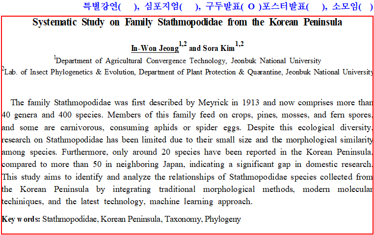
구두발표 초록입니다.
한반도산 감꼭지나방과를 형태적 다양성, 분자적 댜양성, 활용적 다양성에 초점을 두고 분석한 내용입니다.
학위를 마무리하면서 다룬 내용이라 양이 많아서 추후에 Review 항목에서 따로 다루도록 하겠습니다.
This study analyzed the family Stathmopodidae from the Korean Peninsula, focusing on morphological, molecular, and applied diversity.
As this work was conducted extensively in the process of completing my degree,
it will be discussed separately in the Review section later due to its considerable volume.
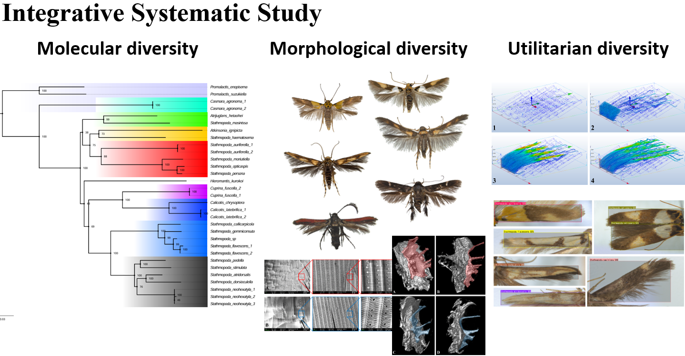
Korean Society of Applied Entomology, 2024, Fall
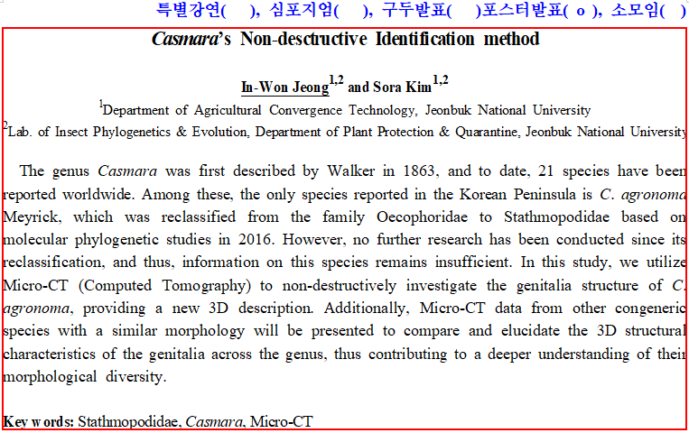
포스터터발표 초록입니다.
이전 발표와 마찬가지로 Micro-CT를 활용한 종 동정 포스터입니다.
저번 발표에서 중형종에 Micro-CT가 적합한 것을 발견했고, Casmara 속의 신종들을 비파괴로 동정한 후 보고한 내용입니다.
This is an abstract for an poster presentation.
This poster, similar to the previous presentation, address species identification using Micro-CT.
Following our earlier finding that Micro-CT is suitable for medium-sized species,
we non-destructively identified and reported new species of the genus Casmara.
Casmara agronoma의 생식기를 디지털 환경에서 손상없이 절단하고 aedeagus를 분리했습니다.
더 많은 Micro-CT 결과들은 Contact->유튜브 ID를 유튜브에서 검색하시면 보실 수 있습니다.
We digitally dissected the genitalia of Casmara agronoma without damage and successfully isolated the aedeagus.
Additional Micro-CT results can be viewed on Youtube by searching the Youtube ID provided in the Contact section.
Korean Society of Applied Entomology, 2024, Spring
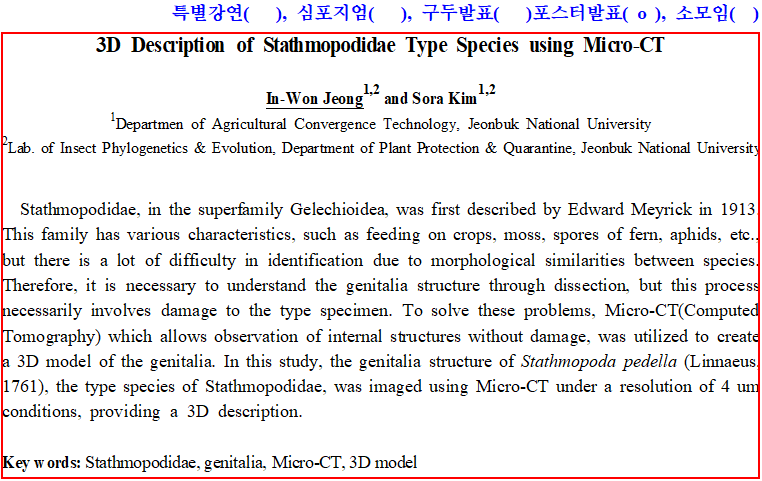
포스터터발표 초록입니다.
곤충의 동정을 위해선 생식기를 해부해서 구조를 파악하는 과정이 필수적인데,
이 과정에서 표본이 망가지고 소실되게 됩니다.
이러한 단점을 해결하고자 Micro-CT (Computed Tomography)를 활용해
파괴없이 3차원 내부 구조를 파악하고자 했습니다.
해당 기술에 대한 자세한 설명은 추후 Review 항목에서 다루도록 하겠습니다.
This is an abstract for an poster presentation.
For insect identification, dissecting and examining genital structures is essential;
however, this process often results in damage and loss of specimens.
We aimed to identify these interspecific function differences in vein structures.
To overcome this limitation, we employed Micro-CT (Computed Tomography) to non-destructively analyze internal three-dimensional structures.
A detailed explanation of this technology will be provided in the upcoming Review section.
Micro-CT를 활용한 감꼭지나방과 생식기의 3차원 비파괴 구조입니다. 해상도는 4um로 진행했습니다.
작은 크기는 명확한 구조 파악이 어려웠지만 가장 마지막에 등장하는
중형종일 경우 자세한 구조 파악이 가능할 정도로 선명한 데이터를 얻을 수 있었습니다.
This is a three-dimensional, non-destructive visualization of Stathmopodidae genitalia using Micro-CT.
The imaging was performed at a resolution of 4 µm.
Although clear structural identification was challenging for smaller-sized species,
we obtained sufficiently detailed data from the medium-sized species shown at the end of the video,
allowing precise structural analysis.
Korean Society of Applied Entomology, 2023, Fall
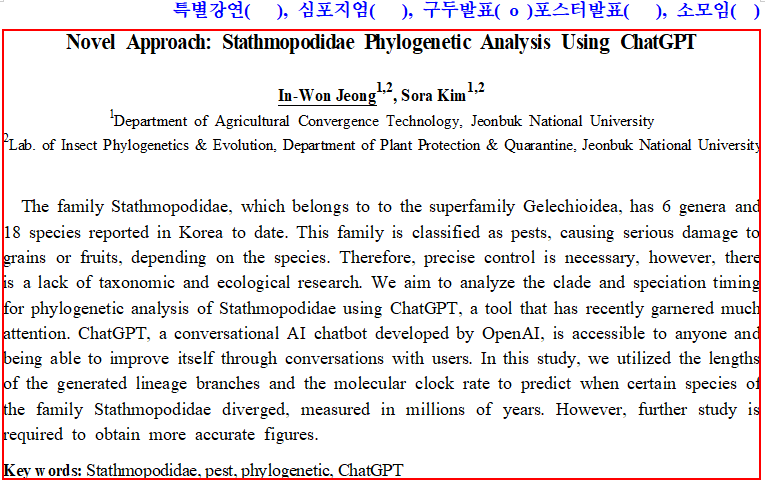
구두발표 초록입니다.
당시 출시된 초기부터 많은 관심을 받고 있는 ChatGPT를 계통분석에 접목하고자 했습니다.
This is an abstract for an oral presentation.
We sought to integrate ChatGPT, which has attracted considerable attention since its initial release,
into phylogenetic analyses.
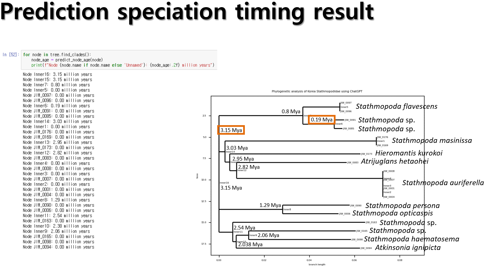
ChatGPT와의 대화를 통해 분화시기를 대략적으로라도 유추해 보고자 했습니다.
분자시계로는 선행 연구에서 나비목에 해당하는 수치인 0.1을 적용했습니다.
당시에는 아직 ChatGPT가 초창기였기 때문에 보완할 점이 많으며,
기존에 수행되던 분석을 넘어서 방법을 더 확장시키고자 하는 것에 초점을 두었습니다.
We attempted to estimate divergence times approximately through interactions with ChatGPT.
For the molecular clock, we applied the value of 0.1, previously suggested for Lepidoptera in earlier studies.
However, as ChatGPT was still in its early stages at that time, there were many aspects requiring improvement.
Our main focus was on expanding methodologies beyond conventional analytical approaches.
Korean Society of Applied Entomology, 2023, Spring
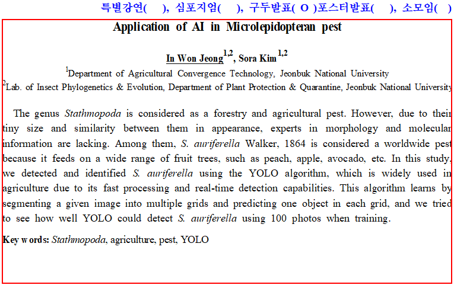
구두발표 초록입니다. 객체 탐지 알고리즘인 YOLO를 활용해 감꼭지나방과의 대표적인 해충인 열매꼭지나방을
자동적으로 탐지하고 동정하고자 했습니다.
This is an abstract for an oral presentation.
We aimed to automatically detect and identify the Stathmopoda auriferella,
a representative pest of Stathmopodidae, using the object detection algorithm YOLO.
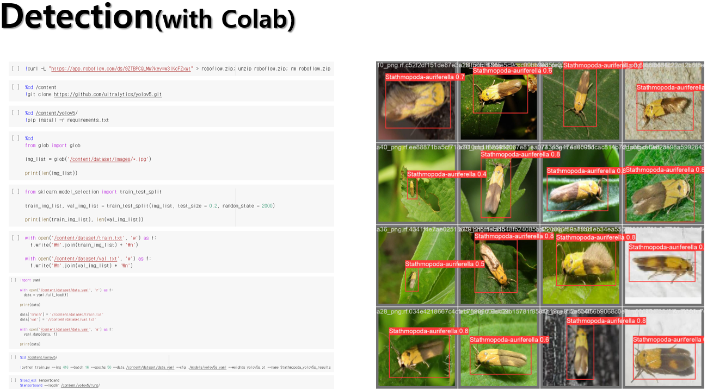
Colab을 활용한 탐지 결과, 성공적으로 자동 탐지 및 동정을 수행했습니다.
코드도 사진으로 같이 첨부하니 필요하신 분들은 사용하시면 되겠습니다.
Using Colab, we successfully performed automatic detection and identification.
The code is attached as an image, so please feel free to use it as needed.
Review
About MrBayes for Phylogenetic analysis [Method]
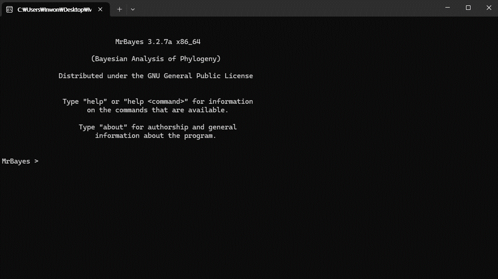
해당 게시물에서는 정말 누구나 보고 따라할 수 있도록 실제 작동법에 대해 알려드리겠습니다.
먼저, MrBayes 실행했을 때 처음 시작 화면은 위 이미지와 같습니다.
In this post, I'll provide intstructions that anylone can follow.
First, when you launch MrBayes, the initial startup screen looks like the image above.
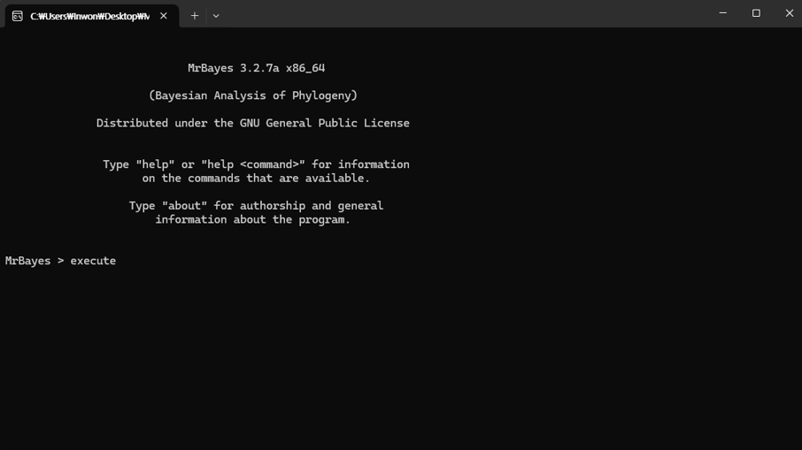
실행을 위해 execute 입력 후 스페이스바를 누릅니다.
To run it, type [execute] and press the space bar.
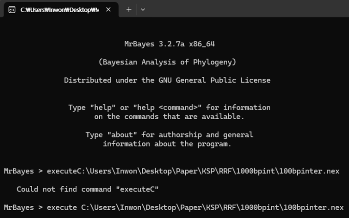
그 후, sequence가 정렬되어 있는 nexus 파일을 드래그 앤 드롭하면 자동으로
파일 경로가 입력됩니다. 만약, execute를 입력한 후 스페이스바를 누르지 않았다면
executeC로 명령어가 인식되어서 작동하지 않고, 파일 경로 이름이 너무 길면
인식을 못 해서 경로는 단순하게 하시는게 좋습니다.
파일 경로 입력이 완료된 후 Enter를 누르면 실행이 됩니다.
Then, drag and drop the nexus file that contains the aligned sequences,
and the file path will be entered automatically.
If you don't press the space bar after typing [execute], the command will be interpreted as [executeC]
and won't work, and if the file path is too long it may not be recognized,
so it's best to keep the path simple.
Once the file path is entered, press Enter to run it.
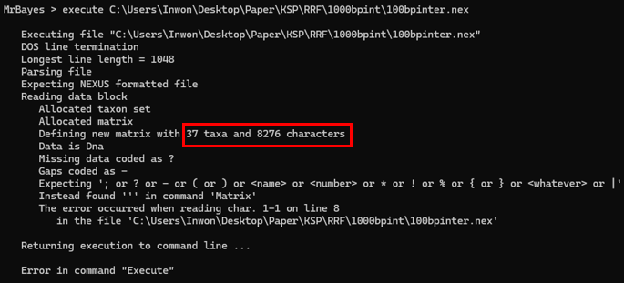
하지만 IQ-Tree에서 잘 돌아가던 nexus 파일이 오류가 날 수도 있습니다.
붉은 박스로 표시한 에러를 보면 알 수 있듯이, taxa와 sequence에는 오류가 없지만
MrBayes가 읽지 못하는 공백이나 특수문자가 포함되어 있는 것을 알 수 있습니다.
이럴 때는 그냥..
However, a nexus file that ran fine in IQ-Tree can still throw an error.
As you can see from the error highlighted in red, there are no issues with the taxa or sequences,
but the file contains whitespace or special characters that MrBayes cannot read.
In that case, Just..
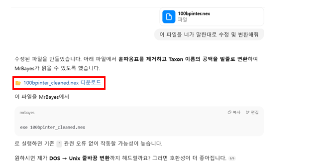
에러 메시지를 복사해서 오류가 났던 내 nexus 파일과 함께 ChatGPT(제가 쓴 건 ChatGPT o3)한테
보내주면 됩니다. 그럼 GPT가 알아서 특수문자 정리 및 줄 정렬을 완료하고 MrBayes에서 돌아갈 수 있는
형태로 변환해주게 되고, 붉은 박스로 표시한 부분을 클릭해서 다운받을 수 있습니다.
Copy the error massage and send it to ChatGPT (I used ChatGPT o3) along with the nexus file that failed.
GPT will clean up special characters and fix line formatting, convert it into a version that runs in MrBayes,
and then you can click the area highlighed in red to download it.
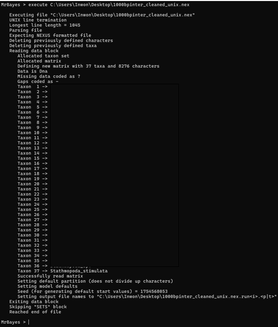
ChatGPT가 보내준 파일로 다시 돌려보니 아주 잘 돌아가고 있습니다.
After rerunning it with the file ChatGPT provided, it worked perfectly.
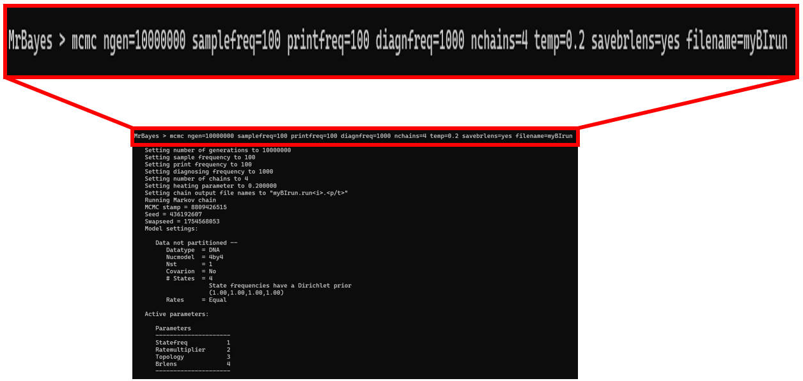
선행 연구 및 자신이 선택한 옵션값들을 설정하고, 분석이 끝날 때까지 기다리면 됩니다.
Set the parameters according to prior studies and your chosen values,
then wait for the analysis to complete.
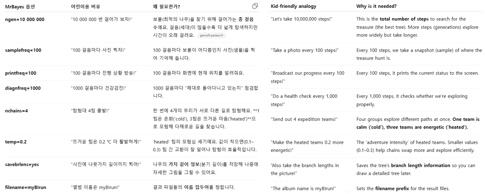
ChatGPT가 예시와 함께 생성한 각 옵션의 의미는 다음과 같습니다.
값을 정할 수 있는 기준이 없으면 MrBayes의 기본값을 사용하시면 됩니다.
예를 들어, temp 값도 선행연구들에게서 따로 지정하진 않았기 때문에 MrBayes manual에서
해당 옵션의 기본값은 0.2라고 했기 때문에 기본값을 사용했습니다.
Here are the meanings of each option that ChatGPT generated, along with examples.
If you don't have a clear basis for choosing values, use the MrBayes defaults.
For example, since prior studies did not specify a temp value, I used the default of 0.2 as stated in the MrBayes manual.
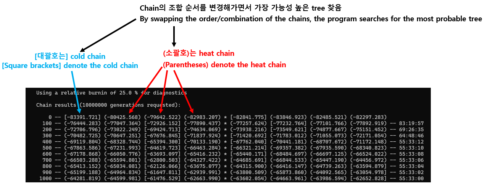
맨 뒤에 나타나 있는 00:00:00 형식의 숫자는 시간:분:초 순서로 남은 시간을 의미합니다.
그 외의 항목은 위 이미지에서 표시했습니다.
The trailing number in the 00:00:00 format indicates the remaining time (hours:minutes:seconds).
The other items are labeled in the image above.
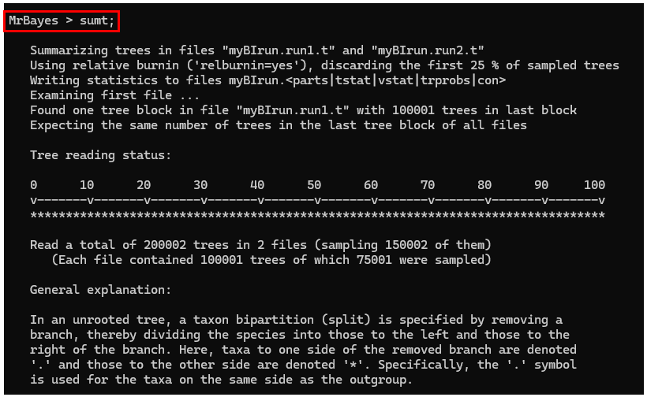
계산이 끝나면 sumt;를 입력하고 Enter를 누르면 작성된 계통도를 내 컴퓨터에 자동으로 다운해줍니다.
When the computation finishes, type [sumt;] and press Enter,
and the generated phylogenetic tree will be automatically downloaded to your computer.
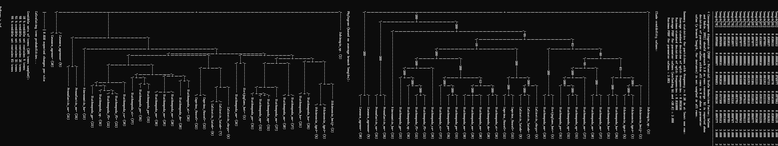
이렇게 수많은 설명과 대략적인 계통도도 함께 제공해주는데, 어차피 계통도 편집 프로그램에서 수정할거라
신경 안 쓰셔도 됩니다.
It also provides lots of explanatory notes and a rough phylogenetic tree, but you don't need to worry about them
-you'll be editing the tree in your tree editing software anyway.
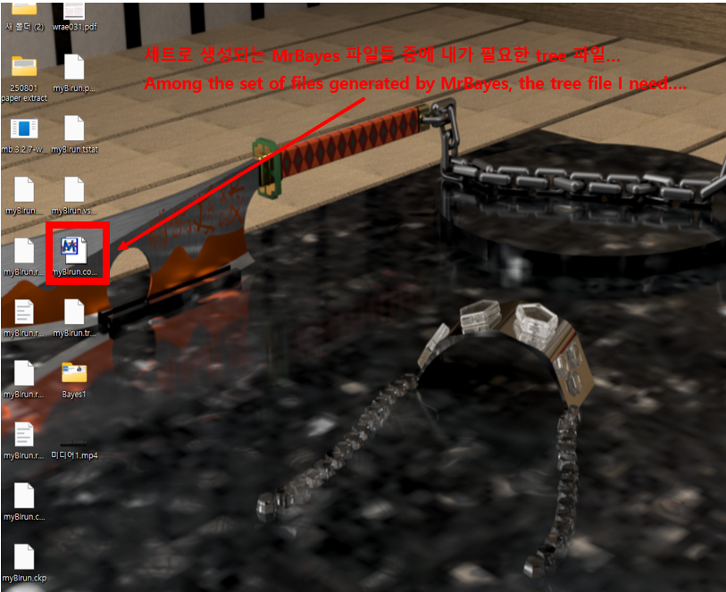
끝!!!!!!!
That's it!!!!!!
Comment
About MrBayes for Phylogenetic analysis [Intro]
계통분석이란? What is phylogenetic analysis?
생물들이 서로 어떤 진화적 관계를 맺고 있는지를 '가계도'로 그리는 작업이며,
DNA 또는 단백질 서열을 비교해 '누가 누구와 더 가깝게 연관되어 있을까?'를 추측하는 과정을 말합니다.
하지만 서열이 수십개만 넘어가도 가능한 계통도가 수백억 개 이상이라, 사람 손으로 일일이 그릴 수는 없습니다.
(종 수가 10종 일 때, 가능한 계통도는 2억8천만 개가 넘어감. 출처: https://doi.org/10.2307/2412810)
따라서, 분자 데이터를 바탕으로 계통도를 그리기 위해선 특수한 프로그램을 사용해야 하는데, MrBayes도 그 중 하나입니다.
Phylogenetic analysis is the process of drawing a 'family tree' that represents the evolutionary relationships among organisms.
By comparing DNA or protein sequences, we infer 'who is more closely related to whom'.
However, once the number of sequences grows beyond a few dozen, the number of possible trees explodes into the tens of billions, making it impossible to evaluate them all by hand.
(Even with just ten species, the number of possible phylogenetic trees exceeds 280 million. Source: https://doi.org/10.2307/2412810)
다른 계통 분석 프로그램과의 차이점 Differences from other phylogenetic programs
계통 분석 프로그램에는 MrBayes 외에도 여러 프로그램이 존재합니다. 대표적으로 IQ-Tree가 존재하는데,
이 IQ-Tree와 MrBayes를 중심으로 차이점과 작동 원리에 대해 설명드리겠습니다.
IQ-Tree에서는 Maximum Likelihood (ML)이라는 방법, 즉, 가장 높은 하나의 가능성만을 찾는 방법이고,
MrBayes에서 쓰이는 방법은 Bayesian inference라는 베이즈 추론이 사용됩니다.
여기에서 베이즈 추론이란, 추론 대상의 사전 확률과 추가적인 정보를 통해 대상의 사후 확률을 추론하는 방법을 말합니다.
이해하기 쉽도록 아래 그림에서 예시로 설명드리겠습니다. 그림에서 공은 뽑고 다시 상자에 넣는, 복원추출 과정으로 수행됩니다.
In addition to MrBayes, there are several other programs for phylogenetic analysis.
A representative example is IQ-Tree. Below I explain the differences in approach and how they work, focusing on IQ-Tree and MrBayes.
IQ-Tree uses the Maximum Likelihood (ML) method, which seeks the single model or parameter set with the highest likelihood.
By contrast, MrBayes uses Bayesian inference, which estimates posterior probabilities for the parameters or trees by
combining prior probabilities with the information contained in the observed data.
To make this more intuitive, see the example in the figure below.
In the figure, draws are performed with replacement-after each draw, the ball is returned to the box.
하지만 앞서 말씀드렸듯이, 계통도를 그리는 방법에는 여러 가지가 존재하기 때문에
하나의 프로그램을 사용하기보다는 여러 개의 프로그램을 통해 나온 결과를 함께 비교하는 경우가 많습니다.
(물론 경우에 따라 한 가지 방법으로 나온 계통도만 보기도 함)
MrBayes는 https://nbisweden.github.io/MrBayes/에서
다운 후 사용 가능하며, 프로그램 설치는 아래 이미지에서 표시된 붉은색 숫자 순서대로 클릭하시면 됩니다.
그 후, 설치된 폴더 MrBayes-3.2.7-Win에서 하위폴더 bin을 클릭 후 각 운영체제에 맞는 버전으로 실행하시면 됩니다.
운영체제 확인은 윈도우 키 + i -> 시스템 -> 정보 -> 시스템 종류 순으로 들어가셔서 확인하시면 됩니다.
As noted above, there are many ways to infer a phylogeny, so rather than relying on just one program,
results from multiple programs are often compared side by side (though in some cases only a single method's tree is used).
You can download and use MrBayes from the following link: https://nbisweden.github.io/MrBayes/
To install the program, click through the steps in the order marked by the red numbers in the image below.
After that, open the installed folder MrBayes-3.2.7-Win, go into the bin subfolder, and run the version that matches your operating system.
To check your operating system type, press Windows key + i -> System -> About -> System type
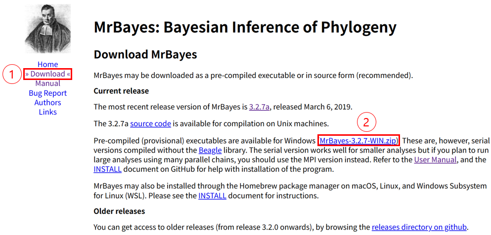
Comment
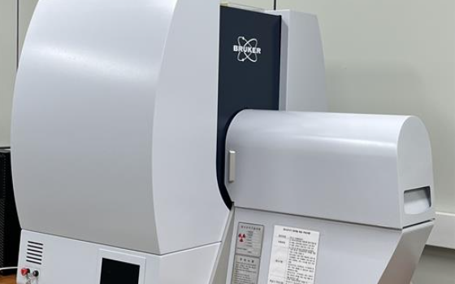
About Micro-CT (Computed Tomography) [Method]
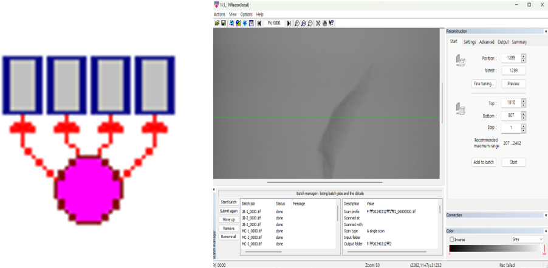
이 게시물에서 제시되는 Micro-CT 사용법은 제가 전북대학교에서 사용한 방법으로 기계나 프로그램에는
차이가 있을 수 있습니다.
기계는 게시글 이미지에서 보이는 Bruker사의 Skyscan 1276 기기를 사용했습니다.
보통 생식기 촬영에는 해상도는 4um로 설정을 했는데요, 경우에 따라 더 미세한 구조를 볼 때는 3um로 설정을 했습니다.
두 해상도에 따라 샘플 결과가 차이가 나긴 했지만 다이나믹하게 결과가 좋아지진 않았습니다.
그리고 NRecon 프로그램에서 샘플의 어디부터 어디까지 촬영을 할 것인지 설정을 해줍니다.
The Micro-CT method described in this post is based on my procedures at Jeonbuk National University,
and there might be differences in the equipment or software used elsewhere.
The Bruker Skyscan 1276 machine was employed for imaging, as shown in the post images.
Typically, a resolution of 4 µm was set for imaging genitalia, but in some cases,
a finer resolution of 3 µm was selected for more detailed structural observations.
Although results varied slightly between these two resolutions,
there was no dramatic improvement with the higher resolution.
The NRecon software was used to define the range of the sample to be scanned.
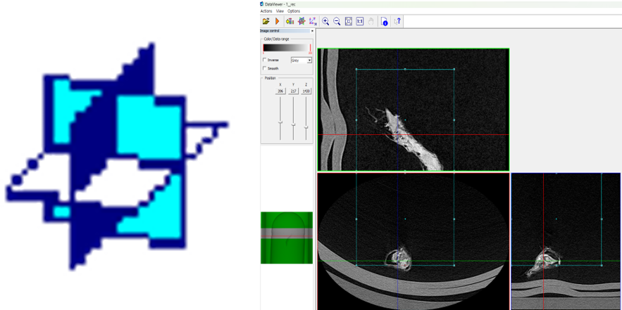
촬영된 결과는 외장하드로 담아오게 됩니다. 샘플 결과의 용량이 매우 커서 (약 30~40GB),
USB는 조금 부담이 되는 것 같습니다.
촬영 결과는 DataViewer 프로그램을 통해 xy, yx, zx 평면에서 샘플을 검토한 후
원하는 부분만 대략적으로 추출하게 됩니다.
만약 촬영한 부분을 모두 3D로 바꾸고 싶다면 해당 프로그램은 생략하셔도 됩니다.
The scanned data is usually stored on an external hard drive
due to the large file sizes (approximately 30-40 GB), making USB storage less practical.
After scanning, the results are reviewed using the DataViewer software,
which allows the sample to be examined in xy, yz, and zx planes.
Only the desired sections are roughly extracted at this stage.
If you wish to convert the entire scanned portion into 3D, this step can be skipped.
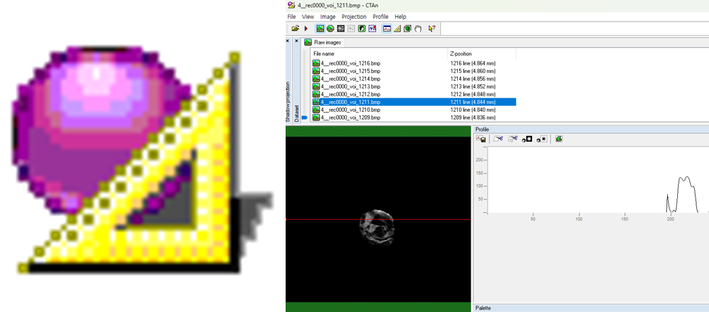
대략적으로 추출한 결과는 CTAn 프로그램을 통해 자유형 도형을 그리면서
원하는 부분을 더 세밀하게 추출합니다.
만약 100장의 이미지가 주어졌다면 첫 번째 이미지에서 도형을 그리고
그리고 10번째와 20번째 이미지에서 원하는 부위에 도형을 그린다면
그 사이의 이미지는 자동적으로 보간이 됩니다.
필요하다면 중간중간 더 도형을 그려 넣어서 더 정교하게 하셔도 됩니다.
이 프로그램도 이미 원하는 부분이 얻어졌다면 생략하셔도 됩니다.
The roughly extracted results are further refined using the CTAn software.
Here, free-form shapes are drawn around the areas of interest for more precise extraction.
If there are 100 images, for example, you could draw shapes on the 1st, 10th, and 20th images,
and the software will automatically interpolate shapes on intermediate images.
Additional shapes can be added as necessary for higher accuracy.
This step can also be omitted if the desired area has already been clearly identified.
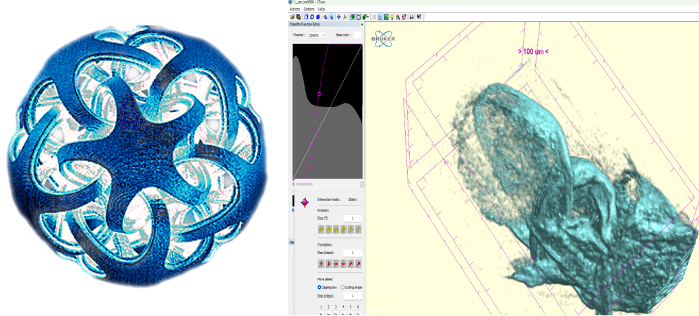
마지막으로 CTVox프로그램에서 추출한 결과물을 3D로 합성할 수 있습니다.
Actions->Load Volume을 선택한 후 추출한 결과가 있는 파일에 들어가서
첫 번째와 두 번째 사진을 제외하고 아무 사진이나 더블 클릭하시면 됩니다.
그러면 자동적으로 합성이 진행됩니다.
3D로 합성한 후 Actions->Movement->Numeric 항목을 통해 원하는 방향으로
절단을 하셔서 내부 구조를 관찰하시면 됩니다! 또한 Actions->Flight Recorder에서
Key Prime들을 통해 내가 한 작업들을 동영상으로 생성할 수도 있습니다.
Finally, the extracted data can be combined into a 3D visualization using the CTVox software.
Select Actions -> Load Volume, navigate to the extracted file,
and double-click any image except the first two. This initiates automatic 3D rendering.
Once the 3D rendering is complete, you can use Actions -> Movement -> Numeric
to cut the object in the desired directions and observe its internal structures.
Additionally, you can create video recordings of your actions through
Actions -> Flight Recorder by setting Key Primes.
이렇게 대조를 조절해서 내부 입체 구조를 보는 것도 가능합니다.
It is also possible to visualize the internal three-dimensional structure by adjusting the contrast in this way.
이렇게 3D 작업물을 3D 동영상으로 만드는 것도 가능합니다!
Actions Options Help가 있는 바 아래에 여러 개의 아이콘이 일렬로 있을 텐데,
그 중 오른쪽에서 두 번째 빨강과 초록색 안경 아이콘을 클릭하시면
3D 동영상이 생성됩니다.
It is also possible to convert this 3D model into a 3D animation!
Under the bar with "Actions," "Options," and "Help," you'll see several icons in a row.
Click on the red-and-green glasses icon, second from the right, to create a 3D video.
Comment
About Micro-CT (Computed Tomography) [Intro]
Micro-CT의 대략적인 원리는 다음과 같습니다.
시료에 X선을 투과시켜 여러 각도에서 투과된 단면 이미지를 획득한 후,
이를 컴퓨터 상에서 합성하여 시료의 내부 구조를 3차원으로 재구성하는 기술로,
미세한 구조를 비파괴적으로 분석할 수 있다는 점에서 생물학, 재료공학, 고고학 등 다양한 분야에서 활용되고 있습니다.
다양한 각도에서 데이터를 수집하고, 각 영상 간 격차를 최소화하여 3D 볼륨 데이터를 얻기 때문에,
기존의 2차원 이미지로는 관찰하기 어려운 복잡한 내부 구조나 결합, 입체 구조를 정밀하게 확인할 수 있다는 장점이 있습니다.
The general principle of Micro-CT is as follows:
This technology acquires cross-sectional images by passing X-rays through a sample from multiple angles,
then reconstructs these images on a computer to visualize the internal structure of the sample in three dimensions.
Due to its ability to non-destructively analyze fine structures, Micro-CT is widely applied in various fields
such as biology, materials engineering, and archaeology.
By collecting data from multiple angles and minimizing gaps between each captured image, detailed 3D volume data is produced,
allowing precise observation of complex internal structures, connections, and three-dimensional configurations that are difficult to discern using conventional 2D imaging methods.
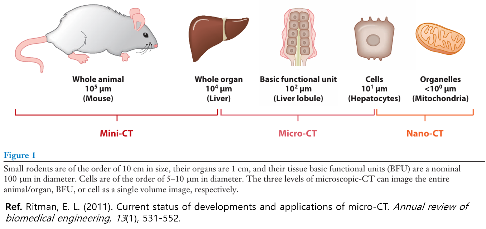
경우에 따라 위에 보이는 이미지처럼 더 세부적으로 나눠서 부르기도 하는데,
설명에서는 일반적으로 많이 쓰이는 Micro-CT로 부르겠습니다.
Depending on the case, it may be divided into more specific categories as shown in the image above,
but for the purpose of this explanation, we will generally use the widely accepted term "Micro-CT".
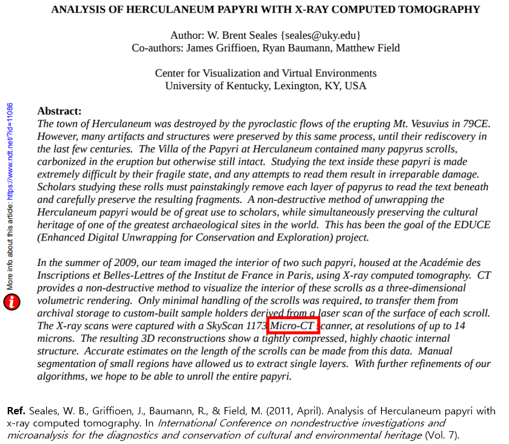
[Ref. https://youtu.be/QBc4oF7QU2o?si=YVUXxY0_OM6wqfJn]
Micro-CT는 앞서 말씀드렸다시피 다양한 분야에서 활용되고 있지만,
최근 해당 기술에 대한 관심이 크게 증가되었습니다.
특히 그 대표적인 예로, 베수비오 화산 폭발로 인해 약 2,000년 간 묻힌 고대 도시 히르쿨라네움에서
발견된 두루마리를 해독하기 위해 진행되고 있는 국제 연구 프로젝트인 '베수비오 챌린지'를 들 수 있습니다.
수세기 동안 불에 탄 채로 보존되어 겉보기에는 단순한 숯처럼 보이지만, 사실 그 안에는 아직 펼쳐지지 않은
귀중한 고문서 정보가 담겨 있을 가능성이 있습니다. 하지만 내부 내용을 보기 위해 펼치는 순간 문서가 바스라져
두루마리가 소실될 가능성이 있기 때문에 펼치지 않고 내부를 봐야할 수밖에 없습니다.
이러한 문제를 해결하기 위해 연구자들은 Micro-CT로 두루마리 내부를 3차원으로 비파괴적으로 분석하고
인공지능 알고리즘을 이용해 미세한 잉크 흔적을 판독하게 내용 일부를 판독하는데 성공했습니다.
이 프로젝트가 언론을 통해 소개되면서, 기존에 의료 분야 위주로 사용되던 Micro-CT가 고대 문헌 해독과
문화유산 보존에도 핵심적인 역할을 할 수 있음이 부각되었고, 이에 따른 대중적 관심도 증가하고 있습니다.
As mentioned earlier, Micro-CT is utilized in various fields,
but recently there has been a significant increase in interest in this technology.
A prominent example is the "Vesuvius Challenge," an international research project aimed at deciphering ancient scrolls
discovered in the city of Herculaneum, which had been buried for about 2,000 years following the eruption of Mount Vesuvius.
Although preserved in a charred state for centuries, appearing externally as mere charcoal,
these scrolls may contain valuable ancient textual information that has yet to be revealed.
However, physically unrolling them to view their contents is not an option,
as doing so would immediately cause the fragile scrolls to disintegrate, resulting in permanent loss.
To overcome this issue, researchers have employed Micro-CT to non-destructively analyze
the internal structure of the scrolls in three dimensions,
successfully decoding parts of the text by using artificial intelligence algorithms to detect faint traces of ink.
As this project gained media attention, Micro-CT—which had primarily been used in medical fields—
became recognized as a critical tool for deciphering ancient manuscripts and preserving cultural heritage,
leading to growing public interest in this technology.


Comment